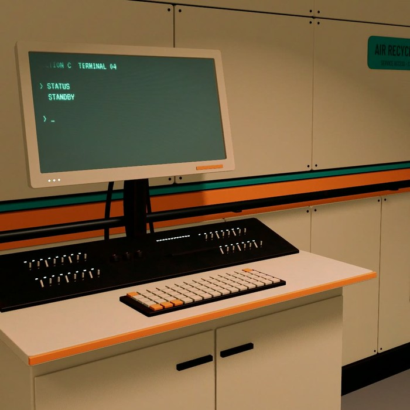
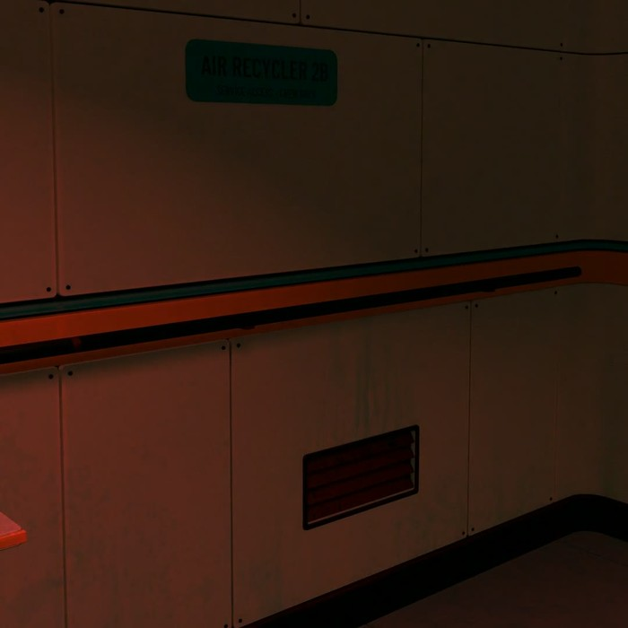
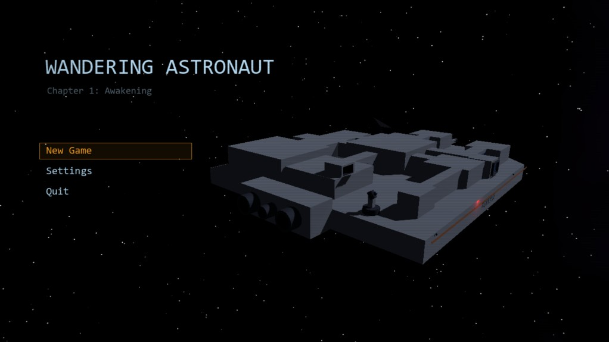
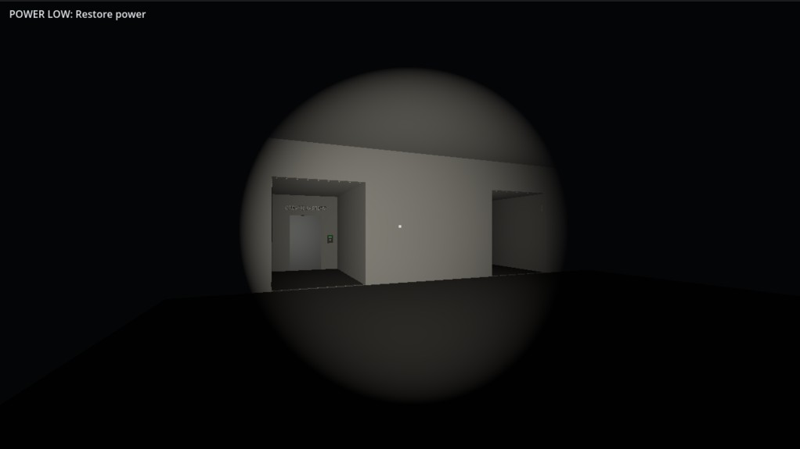
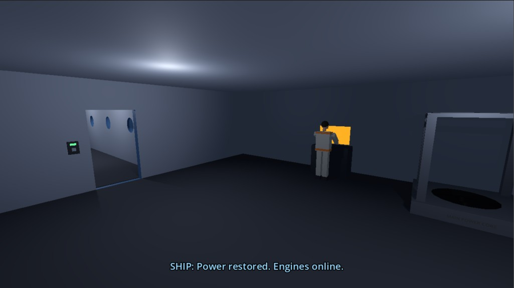

Wandering Astronaut
A first-person narrative mystery · Chapter 1: Awakening
You wake up alone on a research ship built to be cheerful. The lights are out, and nobody is answering.

The premise
An astronaut wakes in the medbay of FGRYYNE, a research vessel drifting through deep space, with no memory of how he got there. The crew is gone, the power is failing and the fuel is running low. To survive he has to keep the ship alive. To understand it, he has to answer one question: who were these people?


From the ship



Key features
- First-person narrative mystery, told through logs, objects and empty rooms
- Tractor-beam asteroid mining to keep the ship fuelled
- Ship hazards, including a hull breach in total darkness
- Slow, suspenseful exploration: horror built on contrast, not jump scares
- Fully voiced by the developer
Platforms and plan
- Chapter 1: Awakening as a free demo
- Full game on Steam (PC), targeting early 2027
- Chapter 1 playable end to end, after two alpha test rounds
- Testers' first read: "like Project Hail Mary"
Studio and contact
Built solo in Godot by Aadesh Malani, QM Studios, India.